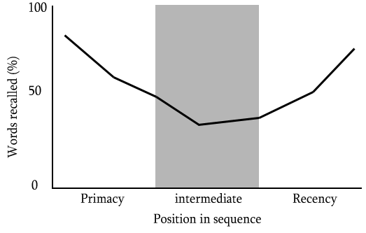

The Big Picture: Hacking Your Brain's Hard Drive
If you want to ace your AP Psychology exam, simply staring at your textbook won't work. The human brain doesn't just passively absorb information; it actively processes, organizes, and decides what is worth keeping and what should be thrown away. Encoding involves the specific strategies and processes we use to get information into our memory. The better and more organized your encoding strategies are, the more effectively that information will be stored and retrieved later. Let's look at the scientific "hacks" you can use to force your brain to remember.
1.Organizing the Chaos
Your short-term memory is incredibly limited, holding only about seven items at a time. To bypass this limit, your brain needs to organize raw data into meaningful structures.
- Chunking
- A strategy that involves grouping individual, isolated pieces of information into larger, more meaningful units. Think about a phone number: you don't memorize 1-0-random digits. You chunk it into three distinct parts (e.g., 555 - 867 - 5309). Suddenly, ten items become three easy-to-remember chunks!
- Categories and Hierarchies
- Your brain loves structure. Categories are mental groupings of similar objects or ideas. Hierarchies take this a step further by arranging information in levels, from broad concepts down to specific subcategories. (Think of how a biology textbook organizes life from Domain down to Species). Structuring your notes into a visual hierarchy dramatically improves your ability to encode them.
2.Mental Gymnastics: Mnemonic Devices
Mnemonic Devices are memory aids that help you organize information in a quirky, meaningful, or highly visual way. You've probably used acronyms like ROY G. BIV (for the colors of the rainbow) or rhymes like "In 1492, Columbus sailed the ocean blue."
One of the oldest and most powerful mnemonic devices is the Method of Loci (also known as a Memory Palace). This technique involves associating the information you need to memorize with specific physical locations in a familiar place. If you need to memorize a grocery list, you might mentally picture a giant gallon of milk blocking your front door, a loaf of bread sleeping on your couch, and a carton of eggs sitting on your kitchen counter. During the test, you just mentally "walk" through your house to retrieve the items!
3.The Power of Timing: Cramming vs. Consistency
How you space out your studying actually changes how your brain physically stores the memory.
- Massed Practice
- Studying all the information in one single, grueling session (also known as cramming). While it might help you pass a quiz the next morning, the information vanishes from your brain almost immediately afterward.
- Distributed Practice
- Spreading your study sessions out over a longer period of time (e.g., studying 20 minutes a day for a week instead of 3 hours the night before).
Psychologists have proven that distributed practice leads to significantly better long-term retention, a phenomenon known as the Spacing Effect. Why does this work? Because it gives your brain time for Memory Consolidation. Consolidation is the biological process of stabilizing and strengthening a memory trace, transferring it securely into long-term storage. A massive part of consolidation happens while you sleep. If you pull an all-nighter to cram (massed practice), you are actively depriving your brain of the sleep it needs to consolidate those memories!
4.The Order Matters: The Serial Position Effect
Encoding is also heavily affected by the order in which information is presented to you. Imagine your friend verbally gives you a 15-item grocery list, but you don't have a pen to write it down. By the time you get to the store, which items will you remember?
The Serial Position Effect predicts that you will easily remember the items at the beginning and the end of the list, but you will completely forget the stuff in the middle. This happens for two distinct reasons:
- Primacy Effect
- You remember the items at the beginning of the list because you had time to mentally rehearse them over and over, successfully moving them into your long-term memory.
- Recency Effect
- You remember the items at the end of the list because they were the last things you heard, meaning they are still freshly bouncing around in your short-term working memory.

5.Don't Trip Up! (Common Misconceptions)
⚠️ Distributed Practice vs. Spacing Effect: These are often confused! Distributed Practice is the action or strategy you choose to do (studying a little bit every day). The Spacing Effect is the psychological outcome (the fact that you actually remembered the information better on test day because of your strategy).
⚠️ Primacy vs. Recency: Don't just know where they occur on a list; know why they occur. Primacy works because of rehearsal (long-term memory). Recency works because the info is still fresh in your working memory.
6.Key Terms in This Topic
7.Practice This Topic
Test yourself on exactly what you just read. The numbers on each button show how much material is waiting for you.
The same self-check questions that close your guided notes. Find out whether the encoding strategies stuck.
Start Quick Check →Flip through the key terms from this topic, including chunking, the method of loci, and the spacing effect.
Open the deck →AP-style multiple choice on encoding strategies, mnemonics, and study timing, with an explanation after every answer.
Take the quiz →